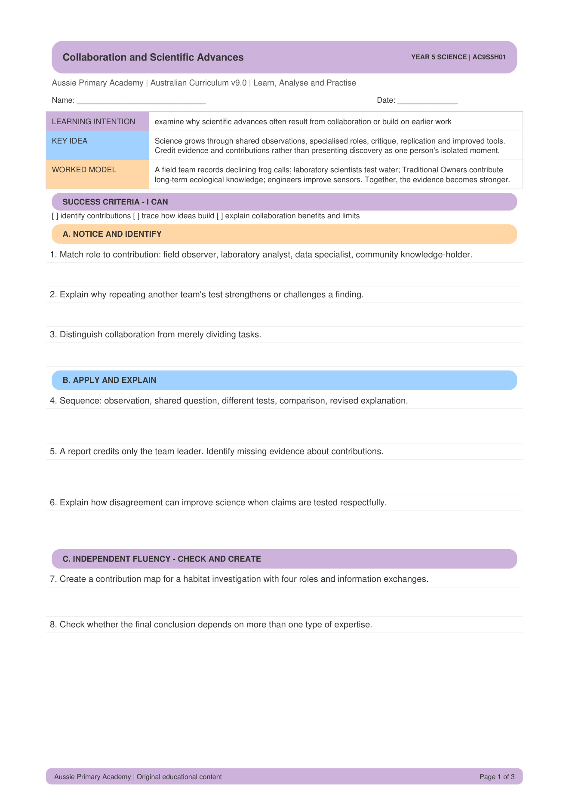

Year 5 · Science · Science as a Human Endeavour · Free Printable
Year 5 Collaboration and Scientific Advances Worksheet
A free printable Year 5 Science worksheet on collaboration and scientific advances. Students examine why scientific progress often comes from shared work and earlier discoveries.
Worksheet Preview

About This Worksheet
This worksheet helps Year 5 students understand that scientific advances often result from collaboration or build on earlier work. Students explore how shared observations, specialised roles, critique and improved tools move science forward.
Aligned to the Australian Curriculum v9.0 code AC9S5H01 — examine why scientific advances often result from collaboration or build on earlier work.
Learning Focus
Examine why scientific advances often result from collaboration or build on earlier work.
Skills Practised
- Explaining collaboration in science
- Recognising how ideas build on earlier work
- Using evidence and contributions fairly
- Science as a Human Endeavour reasoning
Teacher & Parent Notes
Use as independent practice, homework, tutoring or a lesson starter. Discuss one example together, then let students try the rest.
Curriculum
Year 5 Science · Australian Curriculum v9.0 · AC9S5H01